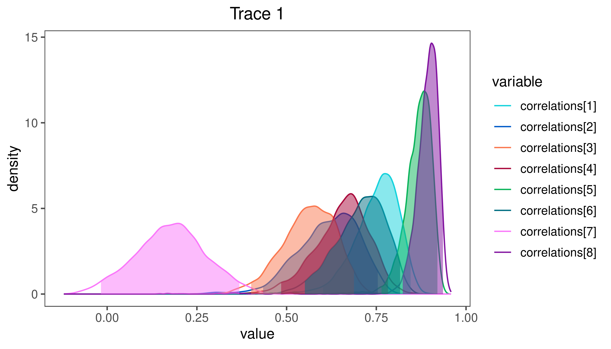
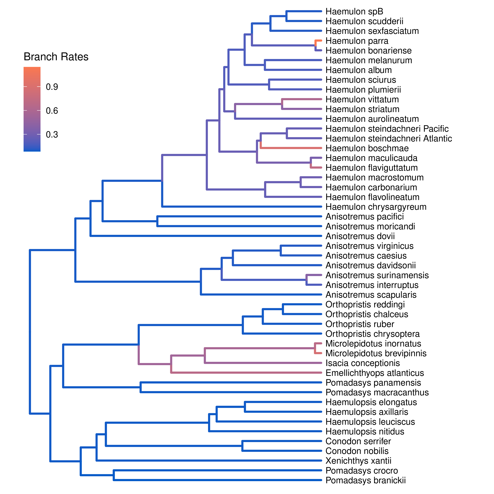

Estimating Correlated Evolution
This tutorial demonstrates how to specify a multivariate Brownian motion model for multiple continuous characters. Specifically, we’ll use a parameter separation strategy to separate the relative rates of evolution among characters from the correlations among characters (Caetano and Harmon 2019). We provide the probabilistic graphical model representation of each component for this tutorial. After specifying the model, you will estimate the correlations among characters using Markov chain Monte Carlo (MCMC). We will then measure the strength of correlation among characters to determine if there is evidence that the characters are correlated.
A Multivariate Model of Brownian-motion Evolution
When analyzing multiple continuous characters, we might be interested in measuring the strength of correlation among sets of those characters. Alternatively, we may be investigating something about the evolutionary process where the correlations among characters are not of direct interest, e.g., how rates vary among lineages and/or over time. In the former case, the correlations are a focal parameter, whereas in the latter case, the correlations are a nuisance parameter, in the sense that failing to model correlations may lead us to incorrect conclusions about the process of interest (Adams et al. 2017).
The multivariate Brownian motion (mvBM) process is a model that accommodates for both variation in rate among continuous characters, and for correlations among each pair of characters. For a dataset with $c$ continuous characters, the mvBM process is completely described by a $c \times c$ variance-covariance matrix, $\Sigma$:
\[\begin{equation} \Sigma = \begin{bmatrix} \sigma^2_1 & \sigma_1 \sigma_2 \rho_{1,2} & \ldots & \sigma_1 \sigma_c \rho_{1,c} \\ \sigma_2 \sigma_1 \rho_{1,2} & \sigma^2_2 & \ldots & \sigma_2 \sigma_c \rho_{2,c} \\ \vdots & \vdots & \ddots & \vdots \\ \sigma_c \sigma_1 \rho_{1,c} & \ldots & \ldots & \sigma^2_c \end{bmatrix}, \end{equation}\]where $\sigma_i^2$ is the rate of evolution of character $i$, and $\rho_{i,j}$ is the correlation coefficient between characters $i$ and $j$. Note that the variance-covariance matrix is symmetric across the diagonal and is completely determined by $\boldsymbol{\sigma^2} = [ \sigma_1^2, \ldots, \sigma_c^2 ]$ and $\boldsymbol{\rho} = [ \rho_{1,2}, \rho_{1,3}, \ldots, \rho_{c-1, c} ]$. By convention, we place the correlation parameters in a correlation matrix, $R$:
\[\begin{equation} R = \begin{bmatrix} 1 & \rho_{1,2} & \ldots & \rho_{1,c} \\ \rho_{1,2} & 1 & \ldots & \rho_{2,c} \\ \vdots & \vdots & \ddots & \vdots \\ \rho_{1,c} & \ldots & \ldots & 1 \end{bmatrix} \end{equation}\]Over a branch of length $t$, a set of characters evolving under mvBM changes by a multivariate-normal random variable, $\boldsymbol{\Delta}$:
\[\begin{equation} \boldsymbol{\Delta} \sim \text{MVN}( \boldsymbol{0}, t\Sigma ) \end{equation}\]where the vector of zeros, $\boldsymbol{0}$, indicates that the average amount of change for each character is zero, and the variance in the changes scales with the length of the branch, $t$.
In a Bayesian setting, it is possible to specify a prior distribution directly on $\Sigma$. Unfortunately, the mathematics of multivariate Brownian motion require that the variance-covariance matrix obeys certain constraints (i.e., it must be positive semidefinite) that make it difficult to specify arbitrary prior distributions on $\Sigma$. In this tutorial, we will adopt a separation strategy that decomposes this matrix into three distinct components: 1) the average rate of change for all characters, 2) the relative rate of change among characters, and 3) the correlations among characters. This separation strategy makes it possible to specify biologically interpretable priors on $\Sigma$ that obey the mathematical constraints of variance-covariance matrices.
The ‘‘average’’ rate of change, $\sigma^2$, is a single parameter that governs the rate of change of the average character in the dataset. The parameter $\boldsymbol{\zeta^2} = [ \zeta_1^2, \zeta_2^2, \ldots, \zeta_c^2 ]$ is a vector of rates, one per character, that determine the relative rate of change of each character. The rate of change for character $i$ is therefore $\sigma^2 \zeta_i^2$. The relative rates are constrained to have a mean of 1, so that $\sigma^2$ can be correctly interpreted as the rate of change for the average character. The correlation matrix, $R$, is as described above. For given values of $\sigma^2$, $\boldsymbol{\zeta^2}$, and $R$, we can simply construct the variance-covariance matrix $\Sigma$ as shown in the equation above.
The separate strategy requires that we specify a prior distribution on each of the three components of the variance-covariance matrix. The average rate, $\sigma^2$, does not have any special constraints and can be chosen from any arbitrary (positive) prior. The relative rates are required to have a mean of 1, but this is easy to achieve. However, the correlation matrix, $R$, must be positive-semidefinite. We will draw the correlation matrix from a special prior distribution, called the LKJ distribution after its authors (Lewandowski et al. 2009), that is designed especially for correlation matrices. This distribution is controlled by a single concentration parameter, $\eta > 0$, that controls the amount of correlation in the matrix; as $\eta$ increases, the prior correlation between each pair of characters decreases toward 0. Importantly, the prior expected amount of correlation is always 0, and the distribution of correlations is symmetric around 0. When $\eta = 1$, the LKJ distribution is ‘‘uniform’’ over all positive-semidefinite correlation matrices. The probabilistic graphical model for this separation strategy is represented in represented in figure ().

In this tutorial, we use the phylogenies and continuous character datasets from (missing reference) to estimate correlations among a set of continuous-characters.
⇨ The full multivariate BM-model specification is in the file called mcmc_multivariate_BM.Rev.
Read the data
We begin by reading in the (time-calibrate) tree of the Haemulids.
T <- readTrees("data/haemulidae.nex")[1]
Next, we read in the continuous-character data.
data <- readContinuousCharacterData("data/haemulidae_trophic_traits.nex")
We record the number of characters for future reference.
nchar <- data.nchar()
Additionally, we initialize a variable for our vector of moves and monitors:
moves = VectorMoves()
monitors = VectorMonitors()
Specifying the model
Tree model
In this tutorial, we assume the tree is known without area. We create a constant node for the tree that corresponds to the observed phylogeny.
tree <- T
Average rate of evolution
We draw the average rate of evolution, $\sigma^2$, from a vague lognormal prior. This prior is uniform on the log scale, which means that it is represents ignorance about the order of magnitude of the average rate of evolution. We use a scaling move to propose updates to this parameter.
sigma2 ~ dnLoguniform(1e-3, 1)
moves.append( mvScale(sigma2, weight=1.0) )
Relative rates of evolution among characters
We draw proportional rates of evolution among characters from a symmetric Dirichlet distribution with concentration parameter $\alpha$. We then multiply these proportional rates by the number of characters to get the relative rates. This ensures that the relative rates have a mean of 1. Increasing the value of $\alpha$ will decrease the amount of rate variation under the prior.
alpha <- 1.0
proportional_rates ~ dnDirichlet( rep(alpha, nchar) )
relative_rates := proportional_rates * nchar
We apply an mvBetaSimplex move to the proportional rates.
moves.append( mvBetaSimplex(proportional_rates, weight=2.0) )
Correlation matrix
We draw the correlation matrix from an LKJ prior distribution with concentration parameter eta <- 1.0. Larger values of eta correspond to less prior correlation among characters. This distribution draws a correlation matrix with nchar rows and columns.
eta <- 1.0
R ~ dnLKJ( eta, nchar )
We use special moves to update the correlation matrix. The first move, mvCorrelationMatrixRandomWalk, perturbs each element of the matrix by a small amount simultaneously. The second move, mvCorrelationMatrixSingleElementBeta, updates a randomly chosen element of the correlation matrix by drawing Beta random variable centered on the current correlation (stretched from -1 to 1).
moves.append( mvCorrelationMatrixRandomWalk(R, weight=3.0) )
moves.append( mvCorrelationMatrixSingleElementBeta(R, weight=5.0) )
We extract the elements in the upper triangle of the correlation matrix for reference. These parameters are the vector of pairwise correlation parameters, $\boldsymbol{\rho}$ in the upper triangular part of the matrix, in natural reading order (left to right, top to bottom).
correlations := R.upperTriangle()
Parameterizing the partial correlation matrix
An alternative to specifying a prior on the correlation matrix is to specify a prior on the partial correlation matrix, $P$. You can think of the partial correlations between character $i$ and $j$ as the correlation between those characters, controlling for their induced correlations through other characters. Parameterizing the partial correlation matrix can be helpful when there are strong correlations between the estimates of the correlation parameters themselves. This makes it difficult for the MCMC to move across the posterior distribution of correlation matrices.
To parameterize the partial correlation matrix, we draw it from an LKJ prior:
P ~ dnLKJPartial( eta, nchar )This distribution is designed so that the induced prior on $R$ is identical to the prior you would be specifying if you drew $R$ from the same LKJ distribution.
Next, we apply moves to the partial correlation matrix.
moves.append( mvCorrelationMatrixRandomWalk(P, weight=3.0) ) moves.append( mvCorrelationMatrixSingleElementBeta(P, weight=5.0) )Then, we compute the correlation matrix from the partial correlation matrix.
R := fnPartialToCorr(P)
Variance-covariance matrix
Having specified the separate components, we assemble the variance-covariance matrix. Here, we provide the square-roots of the relative rates (i.e., the standard deviations) and the correlation matrix. We exclude the average rate, sigma2, because we may want to allow different branches of the phylogeny to have different rates.
V := fnDecompVarCovar( relative_rates^0.5, R )
Multivariate Brownian motion
Finally, we draw the continuous character data from a phylogenetic mvBM model. We provide the variance-covariance matrix, V, as well as the square-root of average rate of evolution.
X ~ dnPhyloMultivariateBrownianREML(tree, branchRates=sigma2^0.5, rateMatrix=V)
We clamp the observed data to this stochastic node to represent that they are observed.
X.clamp(data)
Finally, we create a workspace object for the entire model with model(). Remember that workspace objects are initialized with the = operator, and are not themselves part of the Bayesian graphical model. The model() function traverses the entire model graph and finds all the nodes in the model that we specified. This object provides a convenient way to refer to the whole model object, rather than just a single DAG node.
mymodel = model(sigma2)
Running an MCMC analysis
Specifying Monitors
For our MCMC analysis, we need to set up a vector of monitors to record the states of our Markov chain. The monitor functions are all called mn*, where * is the wildcard representing the monitor type. First, we will initialize the model monitor using the mnModel function. This creates a new monitor variable that will output the states for all model parameters when passed into a MCMC function.
monitors.append( mnModel(filename="output/multivariate_BM.log", printgen=10) )
Additionally, create a screen monitor that will report the states of
specified variables to the screen with mnScreen:
monitors.append( mnScreen(printgen=1000, sigma2) )
Initializing and Running the MCMC Simulation
With a fully specified model, a set of monitors, and a set of moves, we
can now set up the MCMC algorithm that will sample parameter values in
proportion to their posterior probability. The mcmc() function will
create our MCMC object:
mymcmc = mcmc(mymodel, monitors, moves, nruns=2, combine="mixed")
Now, run the MCMC:
mymcmc.run(generations=50000)
When the analysis is complete, you will have the monitored files in your output directory.
⇨ The Rev file for performing this analysis: mcmc_multivariate_BM.Rev
You can then visualize the correlation parameters in RevGadgets.
First, we need to load the R package RevGadgets
library(RevGadgets)
Next, read the MCMC output:
samples <- readTrace("output/multivariate_BM.log")
Finally, plot the posterior distribution of the first 8 correlation parameters rate parameters (the top row of the correlation matrix, which represents how characters two through 9 are correlated with body size):
plotTrace(samples, vars=paste0("correlations[",1:8,"]"))

RevGadgets. Characters 6 and 9 (buccal length and head length, respectively) are highly correlated with body size, while character 8 (head height) seems to be less positively correlated.⇨ The R file for plotting these results: plot_mvBM.R
Advanced: Hypothesis Tests for Correlation Parameters
We can test the hypothesis that characters $i$ and $j$ are correlated using the Savage-Dickey ratio (missing reference). Using the Savage-Dickey ratio, the Bayes Factor for the hypothesis that parameter $\theta$ has a specific value is $\text{BF} = P(\theta \mid X) \div P(\theta)$. Therefore, we can use the Savage-Dickey ratio to compute the Bayes factor that two characters are uncorrelated if we can compute the posterior probability of $\rho_{i,j} = 0$ (the numerator) and the prior probability of $\rho_{i,j} = 0$ (the denominator).
Under the LKJ distribution, the marginal prior distribution of $(\rho_{i,j} + 1) / 2$ is a Beta distribution with parameters $\alpha = \beta = \eta + (c - 2) / 2$ (where $c$ is the number of continuous characters). Knowing this, we can use our posterior samples to compute the Bayes factor for the uncorrelated hypothesis (which is the inverse the Bayes factor for the correlated hypothesis) in
R:library(RevGadgets) eta <- 1 c <- 9 alpha <- eta + (c - 2) / 2 # choose the correlation to test corr <- 20 # this is the correlation parameter between characters 3 and 8 # read the samples from the posterior samples <- readTrace("output/multivariate_BM.log") correlation_samples <- samples[[1]][,paste0("correlations[",corr,"]")] # fit a density to the samples posterior_density <- density(correlation_samples) # compute the approximate posterior probability # of the point hypothesis that rho_ij = 0 post <- approxfun(posterior_density)(0) # compute the prior probability of the uncorrelated hypothesis # we use x = (0 + 1) / 2 = 0.5 because rho = 0 corresponds to the middle # of the beta distribution prior <- dbeta(0.5, alpha, alpha) bf_uncorrelated <- post / prior print(bf_uncorrelated)The resulting Bayes Factor $\approx 0.75$, meaning there is some weak evidence that correlation parameter 20 (between characters 3 and 8) is non-zero.
We urge caution when using the Savage-Dickey ratio for testing correlation hypotheses. First, the density estimator we are using may be unrealiable when the posterior probability of $\rho_{i,j} = 0$ is very low, because we many not have enough samples to accurately characterize that part of the posterior distribution. More importantly, because the correlation matrix must obey the positive-semidefinite constraint, the correlation parameters are not independent in the posterior (or the prior, for that matter); therefore, we recommend against performing multiple Savage-Dickey comparisons for the same analysis (i.e., testing multiple correlation hypotheses).
Exercise 1
- Run an MCMC simulation to estimate the posterior distribution of the correlation parameters (
correlations). - Run an MCMC under the prior to compute the prior distribution for the correlation parameters. Are the posterior correlations different from their prior?
- Change the prior on the concentration parameter,
eta, to decrease the prior weight on high correlation parameters. - Compare the posterior distribution of
correlationsunder these two values ofeta. Are posterior estimates sensitive to the prior concentration parameter?
Variable Rates Among Lineages
In the previous section, we assumed that the average rate of evolution was the same across all of the branches in the phylogeny. However, if you have followed the State-Dependent Brownian Rate Estimation tutorial, you are probably aware that this dataset demonstrates variation in rates of evolution among lineages.
We can relax the assumption that the average rate of evolution is constant across branches the same way that we did for univariate Brownian motion models (see Relaxed Brownian Rate Estimation). Importantly, this tutorial assumes that the relative rates among characters and the correlation matrix are shared among all branches. Otherwise, we can simply rely on the ‘‘random local clock’’ model that we used in the relaxed univariate tutorial.
⇨ The relaxed mvBM-model is specified in the file called mcmc_relaxed_multivariate_BM.Rev. The majority of this script is the same as mcmc_multivariate_BM.Rev, except as described below.
Relaxing the morphological clock
To specify the relaxed morphological clock, we simply modify the component of the model that controls the average rate, $\sigma^2$. We specify the average rate at the root of the tree, $\sigma_R^2$.
sigma2_root ~ dnLoguniform(1e-3, 1)
moves.append( mvScale(sigma2_root, weight=1.0) )
Next, we specify the prior on the expected number of rate shifts.
expected_number_of_shifts <- 5
rate_shift_probability <- expected_number_of_shifts / nbranches
We must also specify the prior on the magnitude of rate shifts (when they occur). This prior supposes that rate shifts result in changes of rate within one order of magnitude.
sd = 0.578
rate_shift_distribution = dnLognormal(-sd^2/2, sd)
Then we draw the rate multiplier from each branch from a dnReversibleJumpMixture distribution, and compute the average rate of evolution for each branch.
for(i in nbranches:1) {
# draw the rate multiplier from a mixture distribution
branch_rate_multiplier[i] ~ dnReversibleJumpMixture(1, rate_shift_distribution, Probability(1 - rate_shift_probability) )
# compute the rate for the branch
if ( tree.isRoot( tree.parent(i) ) ) {
branch_rates[i] := beta_root * branch_rate_multiplier[i]
} else {
branch_rates[i] := background_rates[tree.parent(i)] * branch_rate_multiplier[i]
}
# keep track of whether the branch has a rate shift
branch_rate_shift[i] := ifelse( branch_rate_multiplier[i] == 1, 0, 1 )
# use reversible-jump to move between models with and without
# shifts on the branch
moves.append( mvRJSwitch(branch_rate_multiplier[i], weight=1) )
# include proposals on the rate mutliplier (when it is not 1)
moves.append( mvScale(branch_rate_multiplier[i], weight=1) )
}
We may also wish to keep track of the total number of rate shifts.
num_rate_changes := sum( branch_rate_shift )
We then provide these relaxed branch rates to dnPhyloMulivariateBrownianREML instead of sigma2.
X ~ dnPhyloMultivariateBrownianREML(tree, branchRates=branch_rates^0.5, rateMatrix=V)
X.clamp(data)
When we create our monitors, we include an extended Newick monitor to keep track of the branch-specific rates.
monitors.append( mnExtNewick(filename="output/relaxed_multivariate_BM.trees", isNodeParameter=TRUE, printgen=10, separator=TAB, tree=tree, branch_rates) )
Finally, when the MCMC completes, we create an tree with branches annotated with the branch-specific rates.
treetrace = readTreeTrace("output/relaxed_multivariate_BM.trees")
map_tree = mapTree(treetrace,"output/relaxed_multivariate_BM_MAP.tre")
⇨ The Rev file for performing this analysis: mcmc_relaxed_multivariate_BM.Rev
You can then visualize the branch-specific rates by plotting them using our R package RevGadgets. Just start R in the main directory for this analysis and then type the following commands.
First, load RevGadgets:
library(RevGadgets)
Next, read in the tree annotated with the branch rates:
tree <- readTrees("output/relaxed_multivariate_BM_MAP.tre")
Finally, plot the tree with the branch rates:
plotTree(tree, color_branch_by="branch_rates")
⇨ The R script for plotting this output: plot_relaxed_multivariate_BM.R

Exercise 2
- Estimate the posterior distribution of
branch_ratesunder the relaxed multivariate BM model. - Compare the estimated correlation parameters under the relaxed mvBM model to those when the average rate is constant across branches. Do the estimated correlation coefficients differ? Do they differ in a consistent direction?
- Modify the
mcmc_relaxed_multivariate_BM.Revscript to estimate the posterior distribution ofbranch_rateswhen assuming that characters are uncorrelated. This can be achieved by setting the off-diagonal elements of correlation matrix to 0:R <- diagonalMatrix(nchar)How do branch-specific rates of evolution vary between the correlated and uncorrelated models?
- Adams D.C., Korneisel D., Young M., Nistri A. 2017. Natural history constrains the macroevolution of foot morphology in European plethodontid salamanders. The American Naturalist. 190:292–297.
- Caetano D.S., Harmon L.J. 2019. Estimating correlated rates of trait evolution with uncertainty. Systematic Biology. 68:412–429.
- Höhna S., Heath T.A., Boussau B., Landis M.J., Ronquist F., Huelsenbeck J.P. 2014. Probabilistic Graphical Model Representation in Phylogenetics. Systematic Biology. 63:753–771. 10.1093/sysbio/syu039
- Lewandowski D., Kurowicka D., Joe H. 2009. Generating random correlation matrices based on vines and extended onion method. Journal of multivariate analysis. 100:1989–2001.